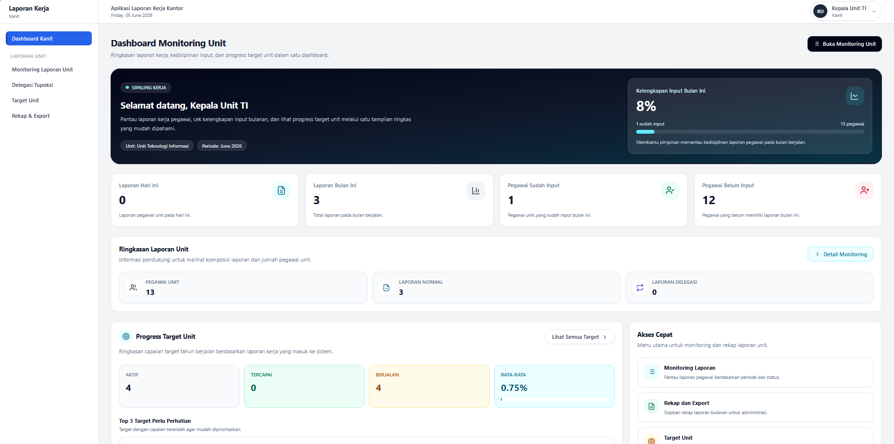

Kanit / Pimpinan Unit
Dashboard Monitoring Unit
Ringkasan laporan, kelengkapan input pegawai, dan progress target unit dalam satu tampilan.

Placeholder Dashboard Monitoring Unit
assets/images/portfolio/dashboard-monitoring-unit.png